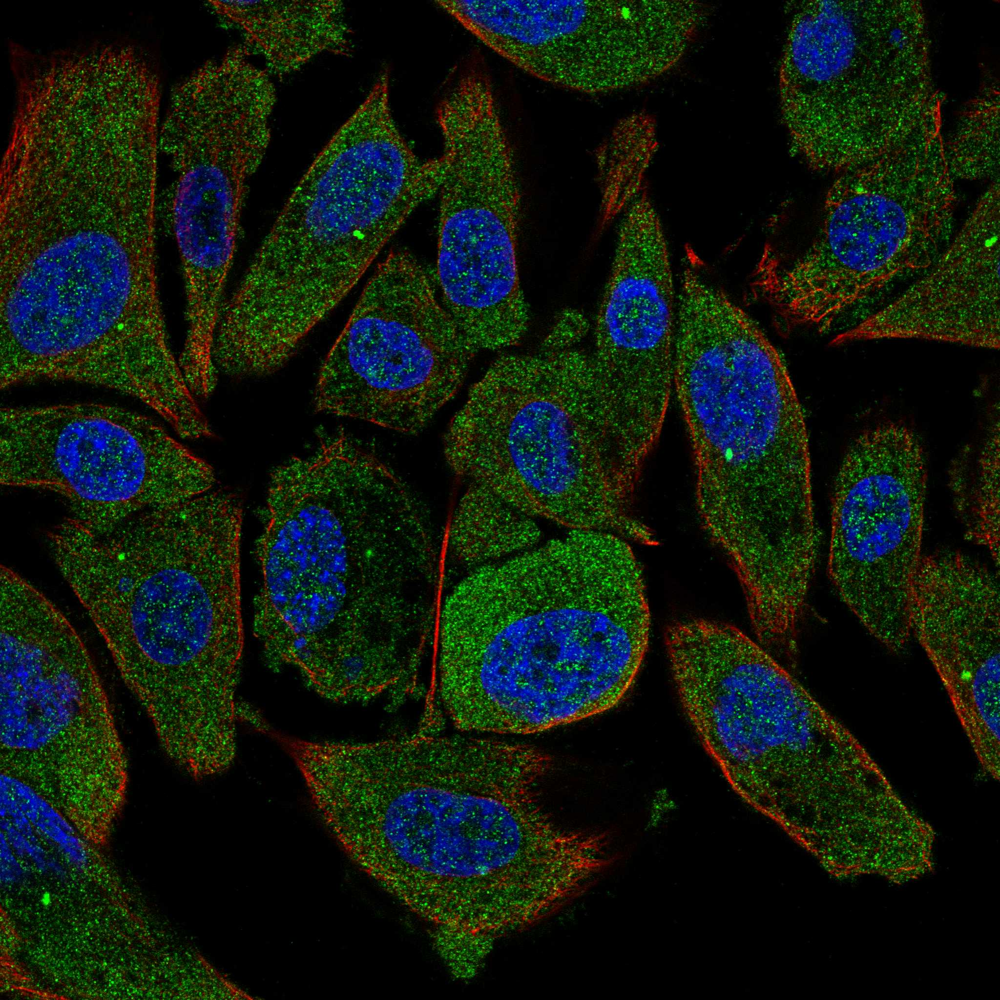
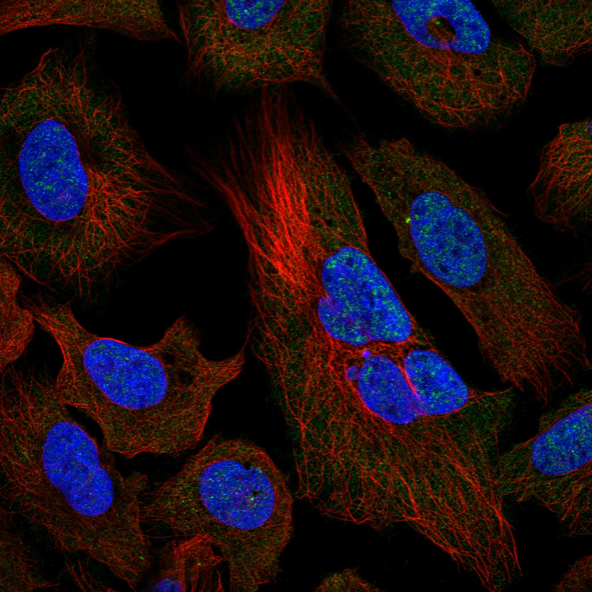

type: protein-evaluation gene: "CCDC13" date: 2026-06-03 tags: [protein-scout, nuclear-protein, evaluation] status: scored ---
CCDC13 核蛋白评估报告 (Full Re-evaluation)
1. 基本信息
| 项目 | 内容 |
|---|---|
| 基因名 / 别名 | CCDC13 |
| 蛋白名称 | Coiled-coil domain-containing protein 13 |
| 蛋白大小 | 715 aa / 80.9 kDa |
| UniProt ID | Q8IYE1 |
| 评估日期 | 2026-06-03 |
IF 图像:  
2. 评分总览
| 维度 | 得分 | 满分 | 加权后 | 关键证据摘要 |
|---|---|---|---|---|
| 🔴 核定位特异性 | 4/10 | ×4 | 16 | HPA: Centriolar satellite, Basal body; 额外: Nucleoplasm, Cytosol; UniProt: Cytoplasm, cytoskeleton, microtubule organizing center, cent |
| 📏 蛋白大小 | 10/10 | ×1 | 10 | 715 aa / 80.9 kDa |
| 🆕 研究新颖性 | 10/10 | ×5 | 50 | PubMed strict=8 篇 (≤20→10) |
| 🏗️ 三维结构 | 7/10 | ×3 | 21 | AlphaFold v6 pLDDT=75.5; PDB: 无 |
| 🧬 调控结构域 | 7/10 | ×2 | 14 | InterPro: IPR038929 |
| 🔗 PPI 网络 | 3/10 | ×3 | 9 | STRING 15 partners; IntAct 0 interactions |
| ➕ 互证加分 | — | max +3 | 1.0 | PDB+AF+STRING+IntAct cross-validation |
| 原始总分 | 121.0/180 | |||
| 归一化总分 | 67.2/100 |
3. 详细分析
3.1 核定位证据
| 来源 | 定位 | 可信度 |
|---|---|---|
| Protein Atlas (IF) | Centriolar satellite, Basal body; 额外: Nucleoplasm, Cytosol | Approved |
| UniProt | Cytoplasm, cytoskeleton, microtubule organizing center, centrosome, centriolar s... | Swiss-Prot/TrEMBL |
IF 图像获取: IF图像已下载并嵌入 (2张)
GO Cellular Component:
- centriolar satellite (GO:0034451)
- centrosome (GO:0005813)
结论: 核定位信号较弱，多个数据源显示混合定位或非核偏好。
3.2 蛋白大小评估
评价: 大小适中（200-800 aa），适合常规生化实验和结构解析。
3.3 研究现状
| 指标 | 数值 |
|---|---|
| PubMed strict count | 8 |
| PubMed broad count | 9 |
| 别名(未计入scoring) |
关键文献: 1. A subset of evolutionarily conserved centriolar satellite core components is crucial for sperm flagellum biogenesis.. *Theranostics*. PMID: 40585997 2. Ccdc13 is a novel human centriolar satellite protein required for ciliogenesis and genome stability.. *Journal of cell science*. PMID: 24816561 3. Modulation of autoimmune diabetes by N-ethyl-N-nitrosourea- induced mutations in non-obese diabetic mice.. *Disease models & mechanisms*. PMID: 35502705 4. Gene expression signatures associated with chronic endometritis revealed by RNA sequencing.. *Frontiers in medicine*. PMID: 37547609 5. Identification of Potentially Novel Molecular Targets of Endometrial Cancer Using a Non-Biased Proteomic Approach.. *Cancers*. PMID: 37760635
评价: 极度新颖，几乎未被系统研究（PubMed ≤20篇）。
3.4 三维结构分析
| 指标 | 数值 |
|---|---|
| AlphaFold 版本 | v6 |
| AlphaFold 平均 pLDDT | 75.5 |
| 高置信度残基 (pLDDT>90) 占比 | 48.1% |
| 置信残基 (pLDDT 70-90) 占比 | 19.4% |
| 中等置信 (pLDDT 50-70) 占比 | 8.8% |
| 低置信 (pLDDT<50) 占比 | 23.6% |
| 有序区域 (pLDDT>70) 占比 | 67.5% |
| 可用 PDB 条目 | 无 |
PAE 图像说明: AlphaFold PAE 图像已重新获取并嵌入（见下方 PAE 图像修正块）；结构判断仍结合 pLDDT 与 PAE 综合判断。
评价: AlphaFold 中等质量（pLDDT=75.5，有序区 67.5%），结构基本可用。
3.5 结构域分析
| 来源 | 结构域 |
|---|---|
| InterPro/Pfam | InterPro: IPR038929 |
染色质调控潜力分析: 存在已知结构域注释，可作为功能研究的结构基础。
3.6 PPI 网络
STRING 预测互作 (combined score >0.4):
| Partner | Combined Score | Experimental | 功能类别 |
|---|---|---|---|
| AASDH | 0.816 | 0.000 | — |
| NDUFAB1 | 0.807 | 0.412 | — |
| PALB2 | 0.807 | 0.412 | — |
| CEP131 | 0.662 | 0.300 | — |
| PIBF1 | 0.659 | 0.351 | — |
| CCDC14 | 0.641 | 0.292 | — |
| CCDC18 | 0.622 | 0.292 | — |
| TCHP | 0.596 | 0.591 | — |
| CEP72 | 0.595 | 0.292 | — |
| KRBA1 | 0.529 | 0.000 | — |
实验验证互作 (IntAct):
| Partner | 方法 | PMID |
|---|---|---|
| — | — | — |
PPI 互证分析:
- 仅STRING预测
- STRING partners: 15，IntAct interactions: 0
- 调控相关比例: 0 / 15 = 0%
评价: STRING 15 个预测互作，IntAct 0 个实验互作。调控相关配体占比 0%。
3.7 多库互证
| 维度 | 来源 | 结果 | 是否一致 |
|---|---|---|---|
| 三维结构 | AlphaFold pLDDT=75.5 + PDB: 无 | pLDDT=75.5, v6 | 仅预测 |
| 定位 | UniProt + HPA | Cytoplasm, cytoskeleton, microtubule organizing ce / Centriolar satellite, Basal body; 额外: Nucleoplasm, | 一致 |
| PPI | STRING + IntAct | 15 + 0 interactions | 数据有限 |
互证加分明细:
- 多库定位一致 (3源): +0.5
- STRING + IntAct 双源验证: +0
- 结构域 + AlphaFold 质量: +0.5
- PDB 多条目覆盖: +0
总分: +1.0 / max +3
4. 总体评价
推荐等级: ⭐⭐⭐
核心优势: 1. CCDC13 — Coiled-coil domain-containing protein 13，极度新颖，几乎未被系统研究（PubMed ≤20篇）。 2. 蛋白大小715 aa，大小适中（200-800 aa），适合常规生化实验和结构解析。
风险/不确定性: 1. PubMed 8 篇，研究基础极有限，功能注释不完整 2. 结构数据质量可接受
下一步建议:
- [ ] 查阅最新关键文献补充研究背景
- [ ] 获取 Protein Atlas IF 图像确认亚细胞定位
- [ ] 设计体外实验验证核定位及潜在调控功能
5. 数据来源
- UniProt: https://www.uniprot.org/uniprotkb/Q8IYE1
- Protein Atlas: https://www.proteinatlas.org/ENSG00000244607-CCDC13/subcellular
- PubMed: https://pubmed.ncbi.nlm.nih.gov/?term=CCDC13
- AlphaFold: https://alphafold.ebi.ac.uk/entry/Q8IYE1
- STRING: https://string-db.org/network/9606.ENSP00000
- Packet data timestamp: 2026-06-02 14:28:42
<!-- AF_PAE_REPAIR_START --> PAE 图像修正（2026-06-05）: AlphaFold 提供 predicted aligned error 图像；此前“PAE 图像暂无数据”的表述为未获取/未嵌入导致。

<!-- DOMAIN_HUMANPPI_REPAIR_START -->
Domain/SMART 与 humanPPI 补充（2026-06-07）
SMART / UniProt domain
| Source | Data |
|---|---|
| UniProt | Q8IYE1 |
| SMART | 未在 UniProt xref 中检出 SMART 条目 |
| UniProt Domain [FT] | 未检出显式 UniProt Domain feature |
| InterPro | IPR038929; |
| Pfam | 未检出 |
humanPPI / HPA Interaction
Source: https://www.proteinatlas.org/ENSG00000244607-CCDC13/interaction
| Partner | Datasets | AF3/HPA structure |
|---|---|---|
| ASB15 | Intact | false |
| CCDC120 | Intact | false |
| CCND3 | Intact | false |
| CDR2 | Intact | false |
| EFHC2 | Intact | false |
| EHHADH | Intact | false |
| ENKD1 | Intact | false |
| FAM161A | Intact | false |
<!-- DOMAIN_HUMANPPI_REPAIR_END -->